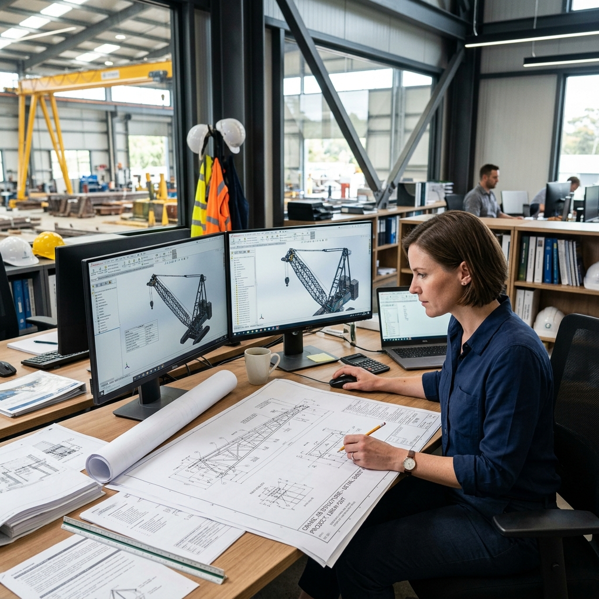
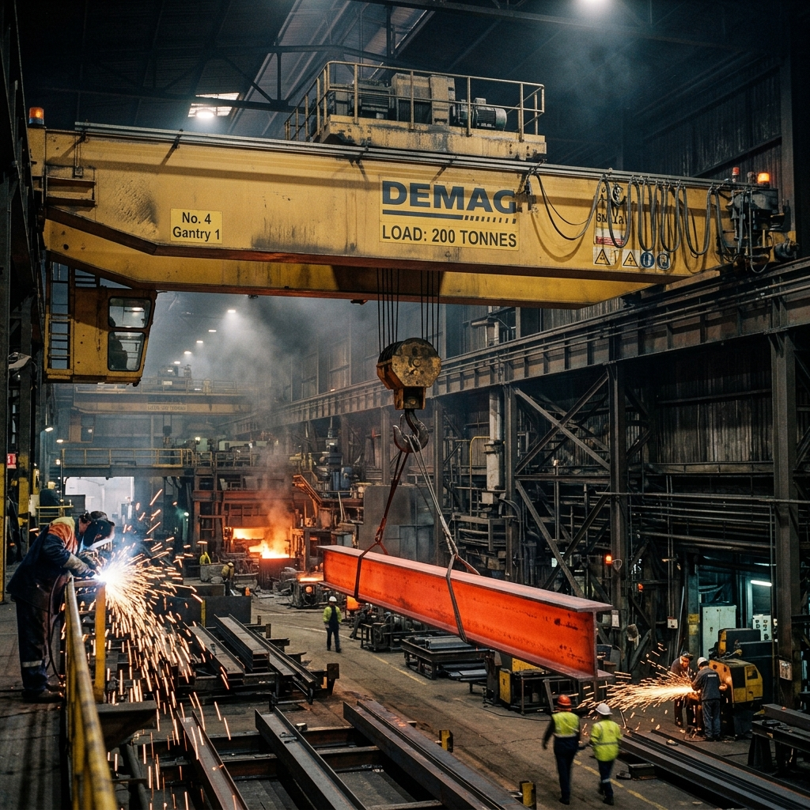
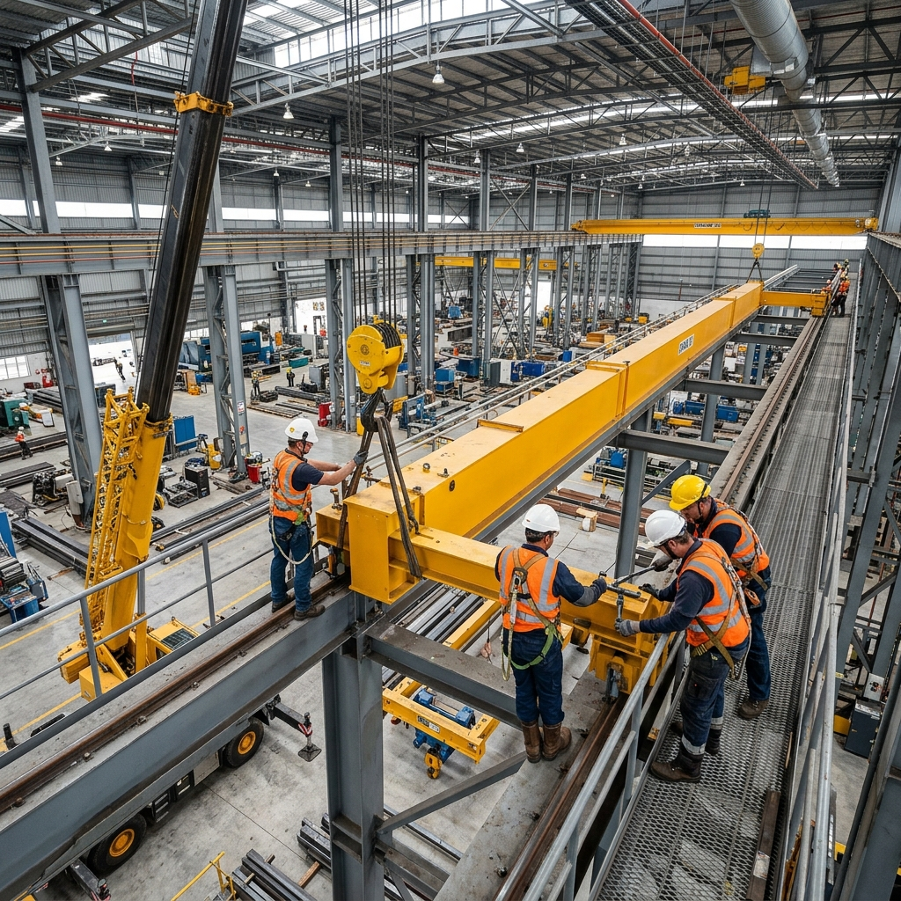
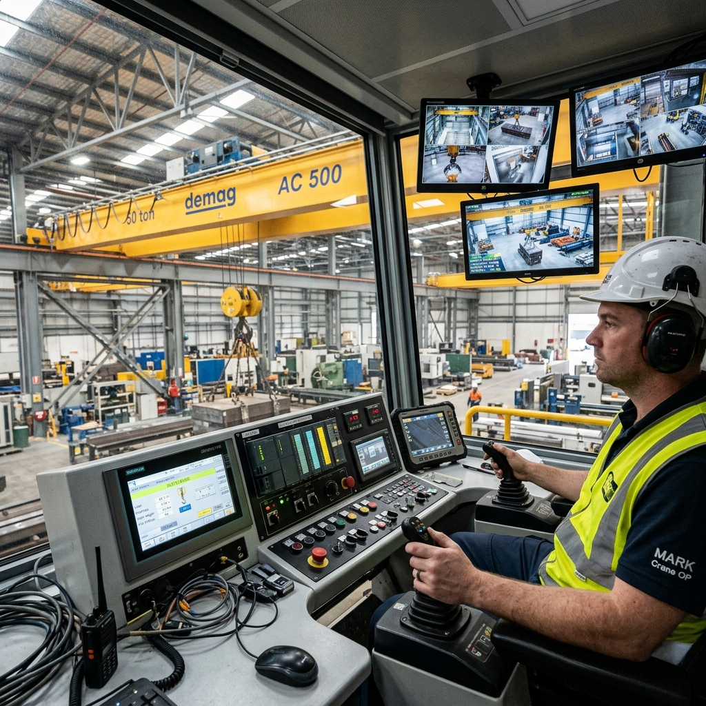
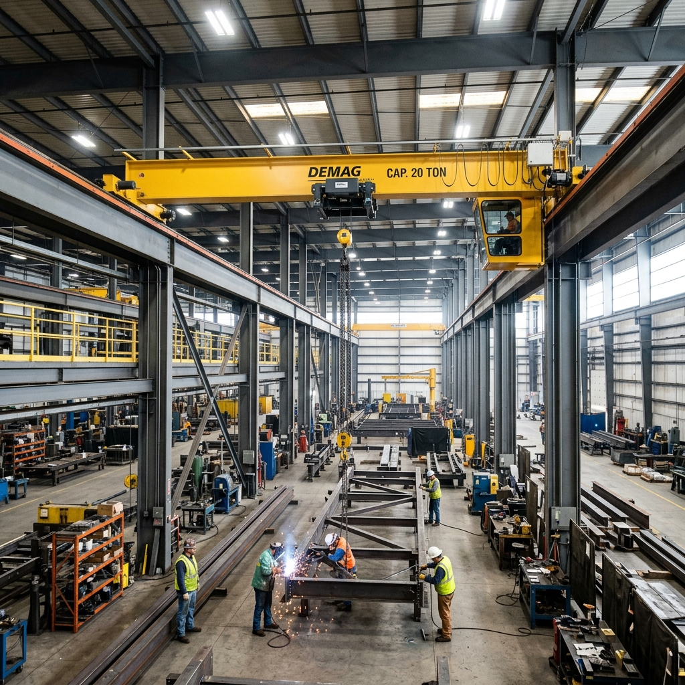
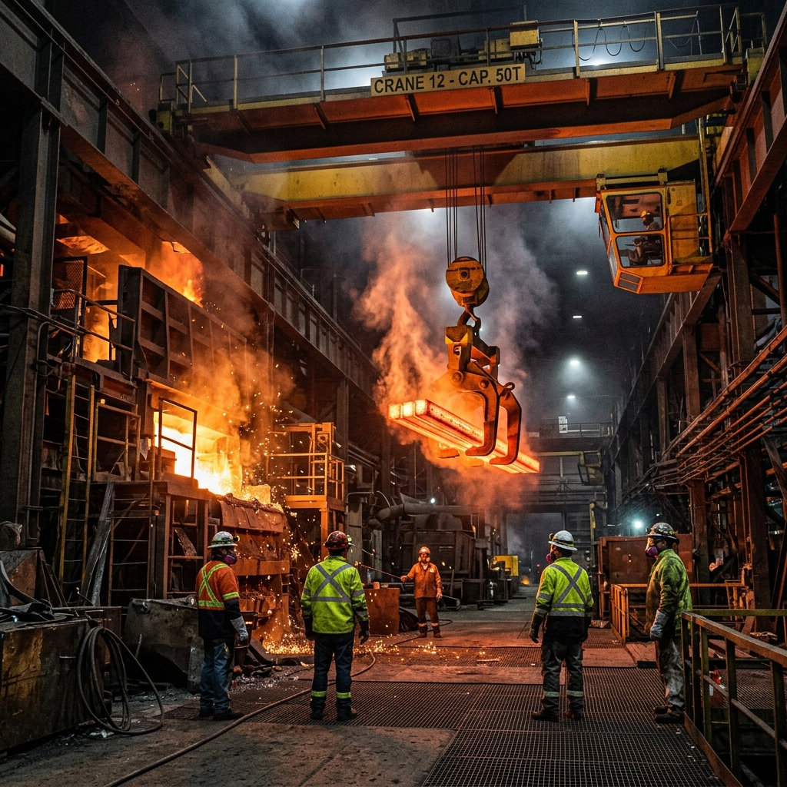
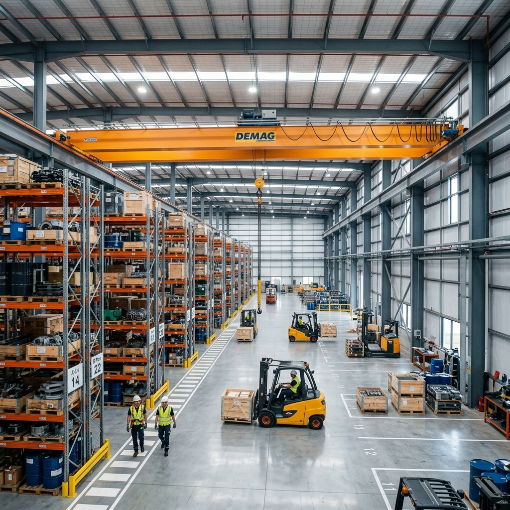

HEAVY-DUTY INDUSTRIAL LIFTING
India's trusted EOT Crane manufacturer — from Chennai to every industrial zone nationwide.
WHO WE ARE
Mekark is a leading EOT crane manufacturer in Chennai delivering industrial overhead crane systems for manufacturing plants, steel industries, warehouses, infrastructure projects, and heavy engineering facilities across India.
From design and fabrication to installation and commissioning — we provide complete turnkey crane system solutions engineered for reliability, safety, and long-term industrial performance.
BUILT FOR INDUSTRIES THAT CANNOT AFFORD DOWNTIME
OUR PROCESS
From the first load calculation to the final operator handover — every stage of your crane project is managed, documented, and delivered by a single accountable team.

PHASE —— 01
Every crane begins as a structural problem to be solved. Our engineering team conducts full load studies, span planning, and duty-cycle specification — translating your facility's demands into a documented design package.

PHASE —— 02
Our in-house fabrication facility produces every structural component under strict quality protocols — box girders, end carriages, hoisting mechanisms — each measured and verified before leaving the shop floor.

PHASE —— 03
Our installation crews manage the full erection sequence — runway beam alignment, girder lifting, trolley fitment, and electrical routing. Every stage follows a documented safety protocol.

PHASE —— 04
Before handover, every crane undergoes full load testing, functional checks, and operator training. You receive a complete technical documentation package and are ready for production from day one.
OUR EOT CRANE SOLUTIONS

Cost-effective industrial overhead crane systems ideal for medium-duty material handling in warehouses, production facilities, and assembly units.
Heavy-duty EOT crane systems designed for high-capacity lifting operations and continuous industrial usage.

Specialized crane systems engineered for demanding steel industry environments including coil handling, billet movement, and foundry operations.

Efficient warehouse lifting crane solutions for streamlined inventory movement and industrial material handling.
Advanced electric overhead travelling crane systems with intelligent operational controls for improved productivity.
Tailor-made crane systems developed according to lifting capacity, span length, workflow movement, and industry-specific operational requirements.
ENQUIRE NOW →WHY CHOOSE MEKARK?
Complete design, fabrication, and execution managed internally for better quality control and faster delivery timelines.
Every crane system is engineered specifically for your workflow, lifting frequency, material type, and industry requirements.
Specialized in heavy-duty EOT crane systems for demanding industrial lifting environments.
Advanced fabrication processes ensure structural accuracy, durability, and operational stability.
Optimized execution process reduces installation downtime and accelerates operational readiness.
From crane runway beam solutions to maintenance, modernization, inspections, and retrofitting — Mekark supports every stage.
INDUSTRIES WE SERVE
Every hour of downtime affects production output, operational efficiency, and project timelines. Upgrade to High-Performance EOT Crane Systems Built for Continuous Industrial Operations.
OUR SERVICES
Customized industrial crane manufacturing using precision engineering and high-quality structural fabrication.
Safe and efficient erection, alignment, testing, and commissioning services for industrial crane systems.
Preventive maintenance programs designed to improve crane lifespan and reduce operational downtime.
Comprehensive annual maintenance contracts with inspection, servicing, and performance monitoring support.
Upgrade existing crane systems with advanced components, automation systems, and enhanced operational capabilities.
Professional testing and inspection services for operational safety and industrial compliance.
Performance enhancement solutions for existing industrial crane systems.
Reliable supply of industrial crane components and replacement spare parts.
GET IN TOUCH
Get expert consultation from our crane engineering team and receive a customized crane solution based on your operational requirements.
FAQ